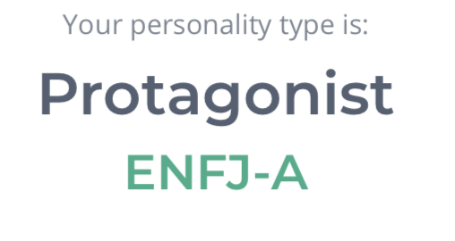
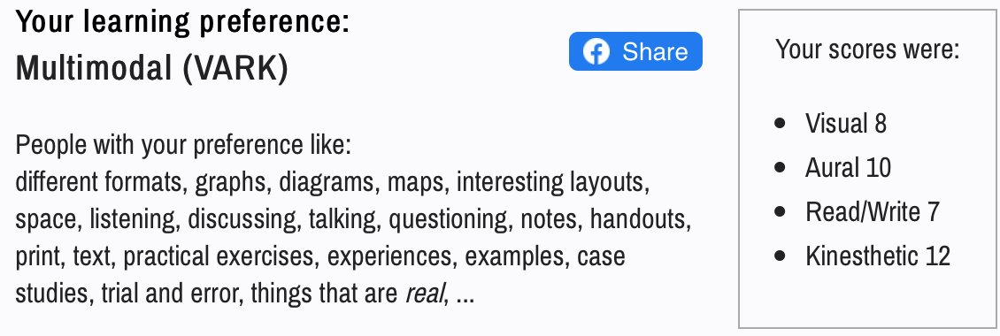
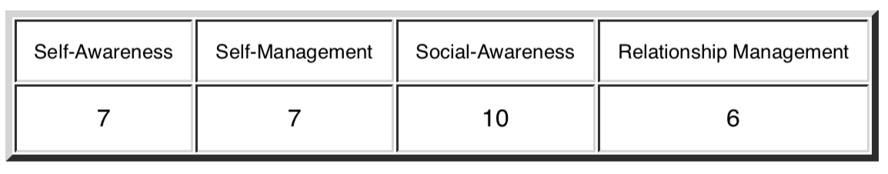

Sibel's Profile
RMIT ID: s3874119
RMIT EMAIL: s3874119@student.rmit.edu.au
About Me
My name is Sibel Jasar and I am studying my first year at RMIT University doing a Bachelor of IT. I am 19 years old. My religious background is Muslim and my ethnicity is Turkish and Albanian. I am bilingual, being able to speak Turkish and English. I love going to the beach and summer is my favourite season! I am an extrovert and enjoy going out with my family and friends. I enjoy reading, writing, baking/cooking and travelling. I am into fitness and like being active. I also love to bike ride. My interest in IT has always been with me since I was young as I always liked and wanted to be the “hacker nerd computer geek” character that is in every movie. I like cybersecurity and software engineering and design. I also have an interest in IT leadership positions in businesses like IT business analysts and etc, that also work on projects and deliverables.
Personality Tests
  The Myers-Briggs test told me that my personality type is the 'Protagonist'. According to the online results my strengths are: tolerant, charismatic, reliable, altruistic and a natural leader. My weaknesses include: being overly idealistic, too sensitive, too selfless, having fluctuating self-esteem and struggling to make tough decisions. The website states that protagonists are able to thrive in many diverse roles at any level of seniority. The emotional intelligence test I took confirms that I have a lot of social awareness, which is backed up by my results in the Myers-Briggs personality test, that explained that protagonists are very social, empathetic and charismatic people. This means I am adaptable to my surroundings and different groups of people, very self aware and confident, and great at self management. In contrast, this personality trait tends to be a perfectionist and can easily stress themselves out. I must be aware that everything cannot be perfect, and let work be able to be handled and done by others in their own way. According to the VARK questionnaire, my learning style is multimodal meaning I am a flexible learner and can learn in many styles. The results show that I predominantly prefer hands on learning where I can learn from participating in activities and trial and error, which is referred to as kinaesthetic learning style.
Ideal Job
My ideal job would be a Senior Consultant in Data Platforms and Advanced Analytics. The job stands out to me as I will be involved in numerous exciting projects across a wide range of customers. The skills required are:
- Proven experience implementing Analytics solutions based on the Azure Microsoft BI stack (SSIS/SSRS/SSAS/Tabular/PowerBI)
- Some experience implementing Big Data solutions either based on the Databricks or open source Spark / Hive / Python
- Understanding and experience with Azure
- Outstanding communication and interpersonal skills with strong consulting capabilities
- Great stakeholder management skills with a proven ability to establish strong working relationships
- Customer focused, managing and exceeding customer expectations
- Leadership and management qualities
- 3 years of experience